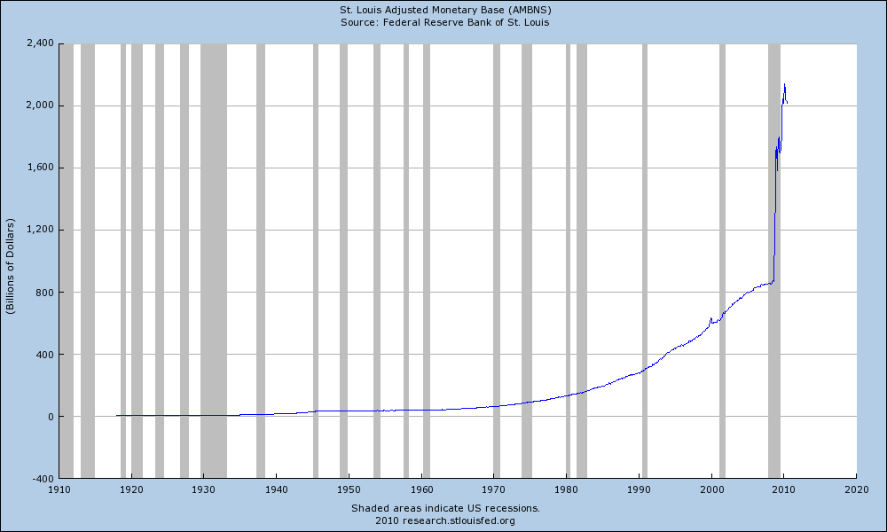

Well, I cooked my first thanksgiving dinner tonight, and for the most part it went off without a hitch. First, based on suggestions people made on this site, I decided to brine the turkey before hand. Brining involves soaking the turkey in a salt/water solution for 12 hours or so before cooking it, and ultimately forces moisture into the turkey, keeping it nice and juicy. My grandma hates dry turkey, and she couldn't believe how moist the one was that came out of my oven, so definitely mission a...
Well, according to my little Excel spreadsheet, my trip begins in 96 days now. Depending on whether or not you’re a glass is half full or half empty kind of person, that will seem like a lot of time or not very much. It doesn’t seem like very much time to me, considering how much I need to still do before taking off.
First, I gave notice on my apartment the other day. My landlord confirmed it today, which basically means the clock is ticking on this place. I’ve been waiting for October to...
This morning I put a deposit down on a nice apartment right in the heart of the trendy area in Buenos Aires, Palermo Soho. Soho, of course, is a reference to a hip, upbeat area in New York City.
Given that I'm only staying for three months, I thought I would spend my time in the cool part of the city. Palmero Soho is extremely green, with lots of parks and trees. In addition, it's also full of great restaurants, pubs, patios, and shopping.
In Buenos Aires it's next to impossible to get a super ...
This morning I put a deposit down on a nice apartment right in the heart of the trendy area in Buenos Aires, Palermo Soho. Soho, of course, is a reference to a hip, upbeat area in New York City.
Given that I'm only staying for three months, I thought I would spend my time in the cool part of the city. Palmero Soho is extremely green, with lots of parks and trees. In addition, it's also full of great restaurants, pubs, patios, and shopping.
In Buenos Aires it's next to impossible to get a super ...
Given that I'm hitting the open skies in a matter of months, I've been trying to spend more time with the family. For easter of this year I went out and bought a pretty nice organic turkey from JD Farms in Langley, but never got around to cooking it. Since I've always been an eater of turkey and never a cooker of it, I offered to do thanksgiving dinner for my mom's side of the family this year.
I have to say, I can cook a pretty mean chicken these days. So I'm hoping I can pull off a turkey. If ...
Last week I went over to my grandmas house to finally organize some boxes that had been there since my university days. At the bottom of one such box was the majority of my hockey and baseball card collection from the late 80s and early 90s. In fact, I probably have around 5 or 6 smaller boxes of cards, many of which come close to being a complete set.
If you were around in those days, you probably remember how hockey cards went from being considered little cardboard things that came with gum to...
A few days ago I pulled the trigger on a trip to the Mayan Riviera in Mexico. I'll actually be heading down there with Dale, mostly so we can drink a few beers and also strategize a bit about the next year before I head off on my little adventure.
While we sometimes meet in Hamilton or Chilliwack, it's obviously much nicer to be able to have those kind of meetings around a pool in Mexico with some nachos and beers. And truthfully, it's really not much more money to meet down there: a typical tr...
A few days ago I pulled the trigger on a trip to the Mayan Riviera in Mexico. I'll actually be heading down there with Dale, mostly so we can drink a few beers and also strategize a bit about the next year before I head off on my little adventure.
While we sometimes meet in Hamilton or Chilliwack, it's obviously much nicer to be able to have those kind of meetings around a pool in Mexico with some nachos and beers. And truthfully, it's really not much more money to meet down there: a typical tr...
About a month ago I was in my room moving some stuff around when I heard a big thump. Looking down, my SLR had taken a small dive off of my bed and landed directly on my Flash unit. Unfortunately, being that the mount is this flimsy plastic thing, it immediately snapped, rendering the 430EX Flash pretty much useless.
I spent a little time investigating whether or not it may be fixable. Not only is it fixable, but it can be done at home for relatively cheap. The first step is to order the part on...
I won't lie: I hate banks.
Other than PC Financial (which has been my main bank since I was about 20 years old), the major banks absolutely gouge their customers. I remember once going into TD when I was in university and asking to open a savings account. Once they showed me their fee structure, I realized there was absolutely no way I'd actually be able to save money using that account, since the costs each month were greater than the interest they paid. Consequently I have been a member of PC ...
Well, according to my little Excel spreadsheet, my trip begins in 96 days now. Depending on whether or not you're a glass is half full or half empty kind of person, that will seem like a lot of time or not very much. It doesn't seem like very much time to me, considering how much I need to still do before taking off.
First, I gave notice on my apartment the other day. My landlord confirmed it today, which basically means the clock is ticking on this place. I've been waiting for October to offic...
I just sent an email which effectively gives my landlord my 60 day's notice for leaving my apartment. I'll probably drop one off in person in a few days just to cover my butt, but assuming I get a reply tomorrow, I'll officially start packing this week.
My goal over the next two months is to get rid of as much stuff as humanly possible. Books, clothes, furniture, you name it. If I get my whole life down to just a few boxes, that would be ideal. Probably not possible, but I'm going to do my best....
Without a doubt, probably the best book I've read on food, nutrition, and the ongoing obesity epidemic raging through the world is a book called Good Calories, Bad Calories by Gary Taubes. Gary Taubes is a New York Times best selling author, and has been featured on quite a few TV programs, including Larry King Live. I've probably read Good Calories, Bad Calories in its entirety around four or five times now, each time managing to soak up a little more of the content.
Shortly after returning fro...
Hard to believe that less than 30 years ago gold was trading at $35/ounce. At that time, the US Dollar was fixed to the price of gold due to an agreement called the Bretton Woods Agreement. That agreement effectively forced countries to back their currencies with gold, which ultimately enforced sound fiscal policies on the participating countries (you can't spend money you don't have).
Unfortunately the inability to spend money they didn't have eventually caused the United States to break out of...
As I mentioned before, I have tons of engineering and science books here, most of which I'm looking to get rid of. I could of course just drop them all off at the library, but I'm aware that some libraries actually give receipts for charitable donations, and I would prefer to use one of those (for obvious tax purposes). Can anyone recommend any library in the Fraser Valley or Greater Vancouver Area that might offer something like that?
Thanks....
Air New Zealand is having a contest now where they'll fly the winner from Canada to New Zealand. I think I'm the perfect guy to go, so I wanted to detail a few of the reasons why.
I have a good friend in New Zealand (Belinda) that I haven't seen since high school!
I've had a few photos published by other airlines, namely Air Transat, and would love to take some photos of New Zealand
I can work from anywhere, even a New Zealand pub. People need to know what the WiFi is like, and I can share it ...
Last week I pointed out that I was down 11 lbs or so I believe, which is a fair distance along my goal of being quite a bit skinnier before I take off for South America. I still have three months, so I can still do a lot more damage to my fat cells before I leave.
Last month I decided to take an engineering approach to things, so I went out and bought a digital scale. Weighing food is obviously kind of a pain in the ass, but I thought it would be a good spot check to make sure I was actually eat...
Unless you've been living in a cave, you've probably heard about BC's New Drinking and Driving Laws, which are now in affect. Here are the bullet points:
Warning range 0.05-0.08 (1-4 drinks): 3-day ban + $200 fine... additional fees make total $600
Greater than 0.08 (2-5 drinks): 90-day ban + 30-day car impound + $500 fine + possible criminal charge... additional fees of towing, interlock ignition device, responsible driver program, etc make total up to $4,060
I fully recognize that drinking a...
I've been meaning to do a posting about the Garth Turner event the other day, but haven't gotten around to it. While Garth is a good public speaker, I didn't really learn anything at the event that I didn't already know or believe. Yes, Garth believes real estate in Canada is in for a rocky ride, as do I. Yes, we are about to head into a period of asset deflation following by price inflation.
I've spent the last six months reading tons of books on investing and retirement, partially because I'm ...
In about ten days, I'll be giving my notice on my apartment out here in Chilliwack. Without a doubt, it's probably the the nicest place I've ever lived in. High ceilings. Crown mouldings. Gas fireplace. Air conditioning. Patio. Hardwood floors. Definitely pretty posh, despite being in the middle of farmland here.
I've been asked a few times if it's hard to give this apartment up. Truthfully, not really. Having gone to university for eight years and stayed in university dorms for five of them, yo...
In case you don't know who Garth Turner is, he's a former MP and now financial guru who has been predicting the troubled real estate market for years. Obviously not many people took him seriously a few years ago, but the majority of his predictions have panned out.
Tomorrow night Garth is speaking to a sold out audience at the Four Seasons hotel in Vancouver. Since Vancouver is thought to be ground zero for the impending real estate market implosion in Canada, many people are obviously eager to ...
I booked my ticket across the pond tonight. In April of 2011 I'll be leaving New York City and heading to Shannon, Ireland aboard Continental airlines. My friend Andy is living near Shannon with his girlfriend right now (she's in med school over there), and I told him recently here in Chilliwack that I'd like to come for a visit. So, now it's official! While I'm not much of a golfer, I'm eager to play a game of golf with Andy in Ireland, for the geography alone.
I really haven't seen much of Eu...
I just got back from the dentist. Truthfully, it's been nearly two years since my last visit. Previously I've always had really great health and dental, but since leaving my last job I haven't had anything other than basic MSP. I debated getting a plan at one point, but they were all around $100/mo for anything useful, and most of them had a graduated three-year scale before you received full (i.e. 80%) coverage. So it really didn't make sense financially.
But as a result, I've been putting off ...
With all the talk of plane tickets on here, I couldn't resist booking a ticket today. I studied spanish for 90 minutes tonight, and then started hunting around for ticket deals. This morning when I looked they were all around $1,400 or so, but I eventually stumbled onto a cheap Continental leg and it became the basis for my trip.
I actually had it down to about $1,000 at one point, but the cheap leg sold out before I got a chance to book it. Anyways, I did manage to get a pretty cheap leg, so we...
I spent a few minutes checking out flight options this morning, and came up with a bit of an idea. Here's part of the problem.
Option 1: Book Second Leg Later
Get a return ticket from Vancouver to Buenos Aires, possibly throwing the return ticket away in Buenos Aries and going somewhere else. The cost of that is about $1,500 right now, and then I still have to buy an expensive ticket to somewhere else when the time comes, which will probably be another $1,500. But at least I have a Vancouver tic...
I got on the scale this morning, and I'm down about 11 pounds since the beginning of summer. I've actually been in a steady decline since the start of the year, mainly because I've been pretty careful about what I'm eating. I've also forced myself to go to the gym a few times a week as well, tossing in the odd yoga class whenever I have some evening time available.
My goal is to be down 30 pounds before I leave in January, which would basically put me at the weight I was back when I used to play...
I'm getting close to the point where I'm thinking about buying my plane ticket. Unfortunately, I'm stuck trying to figure out what type of ticket to buy. It looks like most round trip tickets are only marginally more expensive than a one-way ticket, so it seems stupid to get a one-way ticket, even if I end up tossing the return ticket away. That said, it also seems strange booking a flight for a leg than I really have no idea if I'm going to use or even if I'll want to come back at that point.
I...
I was just reading an article about a restaurant in Carolina Beach that no longer tolerates screaming kids inside the restaurant. Obviously it's a bit controversial, at least because they are making their policy public. But I wanted to see what everyone else though.
As far as I'm concerned, I have no problem with it at all. I understand that kids will be kids, but if your kid is having a really bad day, then I don't see why everyone else in the restaurant has to have a crappy meal because of it....
I was thinking a few things through yesterday, and came up with a slightly different plan. My last plan was to give my apartment up at the end of December, and then take off in the first few days of January. I'm happy with the January departure date, but not so happy that Christmas would probably involve lots of box packing and moving.
So I came up with a plan B.
I think I'm going to give my apartment up for the end of November, and be totally homeless at that point. I already asked my dad if it...
My goal on my trip is to get myself down to a single backpack when I leave. It's obviously going to be a pretty technologically heavy backpack, but it's still going to be pretty light. Most people I know who have traveled say that the amount you enjoy yourself on trips is inversely proportional to the amount of stuff you bring along, and I can totally believe that.
That's not to say you can't purchase items when you arrive, because that's what I plan to do. But in terms of what I take along, her...
I was out with some friends the other day in Stanley Park in Vancouver, and I was briefly considering changing my Twitter profile photo to a shot my friend John took. Rebecca then pointed out that it probably would be good to finally get rid of the PlentyOfFish photo I have had on Twitter for a while. Since I had no idea what she was talking about, I started prying for some more information. Apparently the photo I had put up on Twitter was a watermarked version that I had put on PlentyOfFish a ...
I just wrote four post-dated rent cheques, one for each month until the new year. After that, I should be officially homeless, at least for a while. I have to give notice on my apartment on October 30th, which would put me out of my place on December 31st. Right now the plan is to take off on the 2nd of January or so, which means I can hang out around here for Christmas and New Years, and then hit the open skies.
I haven't had much time to study spanish yet, but I'm going to start blocking the t...
I've said it before, but I'm going to say it again: I think the iPhone would be a lot cooler if it had a temperature sensor on it. In terms of technology, all it is a single temperature controlled resistor (called a thermistor), probably worth about 5 cents. But it would be cool to be on a patio and be able to see how hot it is.
I also think that if everyone opted in to given this data to a central repository, that it would be possible to increase the accuracy of our existing weather models a gr...
You know, I remember being in a pub in Yaletown with my friend Dave the night Obama was elected. The place was absolutely packed, and other than the people who were seated there early, it was standing room only for everyone else. There were TVs all over the place showing what was going on in the states, and everyone was glued to the TV, waiting to see the results.
I'm not at all joking when I say this next part -- people cried in the Yaletown Brew Pub when Obama was elected. In Vancouver, Canada...

The following graph formed the basis for Glenn Beck's video talking about hyperinflation, but I thought I would repost it here. Inflation, by definition, is the expansion of the monetary base in a country. While conventionally most people associate rising prices (as measured by the consumer price index - CPI) as inflation, that's just the symptom of inflation -- the root cause in the expansion of the monetary supply.
Most people concede that price increases tend to lag inflation by a year or two...
It should be obvious by reading my blog entries over the last few months that I've become interesting in aspects of economics. In an effort to understand the current financial crisis, I've been trying to read as many different viewpoints on the meltdown as well as general economic theories. To that end, I wanted to point out some of the books I've read recently. I'll also give a rating based on what I thought of it.
Too Big To Fail - 4/5
This book discusses the meltdown from the viewpoint of the...
Within the United States, there is a strange entity, neither completely public or completely private, that manages the monetary policies of the United States. This entity, The Federal Reserve, has the task of adjusting interest rates, and also attempting to stimulate the economy using various mechanisms such as Quantitative Easing.
Thomas Jefferson, one of the founding fathers of the United States, had this to say about a government influenced monetary system:
I believe that banking institution...
It's no secret that over the last few decades the economies of North America have changed from ones that favour saving to ones that favour spending. When interest rates were 10%, you could simply leave your money in the bank and watch it grow. Now with inflation rates of around 3% per year (which is typically caused by the government printing more fiat money), your purchasing power will decrease if you leave your money in the bank. That means that most of us are forced to put our savings into th...
When I posted about the iPhone 4 a few weeks ago, a few people thought I might be smoking crack to think that people buying unlocked phones would have any impact on the cell phone industry in Canada. While that still remains to be seen, Rogers just announced that they're willing to sweeten a 3 year contract by $100, which in my mind is a direct result of the lack of people signing up (or extending their current contract) to a 3 year contract compared to previous iPhone launches. Obviously that's...
If you do the math, that's January 2nd, 2010 2011. If all goes according to plan, that's the day I'll head out (with only a single backpack in tow) on a little adventure. While I still have a lot to plan for and get ready before then, I've set a date to hopefully give me the motivation to finally follow through on it.
I don't really know why, but I'm always a bit hesitant to travel. Maybe it's all the time I've spent living out of suitcases in hotel rooms, or all the trips I went on that were wo...
I've been trying to find out ways to get myself out of the apartment in the evenings and get a bit more exercise. I've actually being going to the gym quite a bit over the last three months. That's fine and all, but hitting the elliptical trainer and lifting weights gets a little boring after a while, especially if you don't have a gym buddy.
So, based on some recommendations from some friends, I thought that I'd try out a few yoga classes.
Vinyasa Yoga
I decided to start with a Vinyasa Yoga dro...
The last time I was down in the Caribbean, I took a real shine to eating guacamole. Truthfully, I had always sort of stayed away from it because I thought I wouldn't like the avocados in it. But really good guacamole is addictive, and I was eating it like it was going out of style in the Caribbean. In fact, I was putting it on hamburgers, hot dogs, chips -- you name it.
I've made about ten batches of guacamole in the last year, each time refining it a bit. It's actually getting to be pretty good...
I've started making small plans for a possible working vacation for a few months. I originally was going to go sometime this fall, but I was starting to feel more and more like it was a bit too rushed. I also wasn't entirely sure how to deal with Christmas: spending $1,500 on a plane ticket to get somewhere doesn't make a lot of sense if you're just going to get on a plane and head back home again a month or so later for Christmas.
With that in mind, I'm now targeting January as the month when I...
I spent the majority of the day yesterday waiting in a huge line-up at Vancouver's Pacific Centre Apple store. Doors opened at 7am, but thanks to a late night wine-filled game of Cranium, yours truly wasn't quite up to snuff at 7am. I strolled down at around 9:15am or so, only to be greeted with a line that not only snaked all the way down the halls inside the mall, but had spilled out onto the streets, wrapping down Granville for about 3/4 of a block.
I ran into my friend Dave at the store. Des...
I've been writing about obesity and something called hyper-insulinemia for about as long as I can remember. For those of you who don't know, many people nowadays have something called metabolic syndrome, which is a cluster of symptoms including obesity, high blood pressure, elevated insulin levels, and high cholesterol. The main component of all of these is something called hyper-insulinemia (which is also called insulin resistance).
What I just wrote is pretty much accepted as fact nowadays. Wh...
I've been thinking lately about starting to go to Yoga. I really know nothing about it, other than people go and bend in various directions for an hour or so at a time. I had a few friends in Vancouver who went religiously, guys too, and they always seemed pretty pumped about going. I've been trying to come up with more things to do when I'm not working, and things that involve exercise or being healthy are at the top of the list these days. The gym is great and all, but treadmills and dumbbells...
Yes sports fans, it's almost that time. On Friday the highly anticipated successor to the iPhone 3GS is released. My experience so far with Rogers wireless this last week, as well as on launch days in the past, seems to indicate that Friday is going to be a complete gong show for everyone involved.
Unlike the previous launches, we now have an interesting option in Canada: we can purchase an unlocked phone from the Apple store. Unless I'm mistaken, I don't believe we've ever had that luxury in Ca...
Despite having a relatively positive outlook about the economy previously, the Fed today just downgraded all its forecasts and even mentioned the taboo "D" word, deflation.
I thought it would be fun to post a few of the more educated comments from CNN here.
Keynesian versus Austrian economic theory. Keynes 0, Austrians 1. Now pull up a lawn chair, pop a cold one, and kick back to the soothing hissing sound of every asset class deflating... ~ Jim Koutras
I got my beer chilling in the fridge.
Y...
Well, it's been nearly two weeks since the HST kicked in, and I thought I'd summarize some of the benefits:
camping fees went up from $24 to $30 at Cultus Lake
Gas went up about 5 cents per litre in Chilliwack
Carbon tax on fuel went up 1.12 cents/litre
the local Pharmacy started charging for all bags on July 1st
a can of soda went from $1.05 to $1.15 at my favourite coffee shop
BC Hydro's Rate Rider was silently raised from one to four percent
Clearly this tax is on its way to causing prices ...
Today I was up at the lake with my iPad, reading a book in the sun and listening to the sound of the little lake surf. Truthfully, it felt a lot like being in the Caribbean, sipping a beer by a pool in Punta Cana, and it made me miss traveling. While I was enjoying myself reading, my iPad decided to cut my experience short by shutting itself off due to overheating. So, I decided to head back to town and do a bit of thinking.
At this point in time, I'm about 50/50 with the possibility of doing so...
Tim Ferris would most likely classify me as one of The New Rich, those of us who have somehow managed free ourselves from the shackles of the cubicle, and from the typical 9-5 workday.
Strangely enough, I don't much remember what it's like to work in an office anymore. It's been nearly one and a half years since I left a 9-5 office job (which had really been a 9-9 job for most of my adult life), and I've spend most of that time working from home and from coffee shops. I even managed to spend a f...
If Chicken Little were here, he might be staring up at the sky, wondering just how much longer it would be until he could tell everyone he told them so.
Without a doubt, the last few weeks in the stock market have been pretty brutal. While the markets have made small gains over the last year, the last few weeks have seen the destruction of most of that value. In fact, the TSX had its worst quarter since the 2008 meltdown. I know most of my investments are down about 6 or 7% in the last month, w...
About six months ago, Dale and I started laying the foundation for the successor to our popular WordPress plugin, WPtouch. We released WPtouch about two years ago, and it's approaching around one million downloads in the WordPress repository. Aspects of it were also integrated into WordPress.com -- it is the default theme on WordPress.com for iPod/iPhone mobile visitors, and represents around 60 million page views a month for mobile visitors.
WPtouch 2.0 is a fairly big upgrade to WPtouch, addin...
My background obviously isn't in finance - I'm actually some weird hybrid between an electrical engineer and a physicist. While I understand a lot of the basics in finance, there are still quite a few gaps in my knowledge, and I'm slowly working towards filling those in.
Last night I was pretty beat, so I crawled into bed and purchased a book about capitalism and the economy. I actually managed to read most of that in a few hours, and decided I'd grab another book as well. Wouldn't you know it, ...
So I realize this could potentially be a pretty deep rabbit hole, but I thought I'd ask the question here. I'm in the process of trying to put together a simple web server configuration that is more robust than a single server configuration. Truthfully, I've never set something like this up, but for what I'm after I'm not looking for something amazingly complex or expensive.
The server needs to basically handle HTTP requests, and interface with a database. In my mind, this would require two ser...
I first started investing in the stock markets around 2000. Since then, I've had front row seats to at least two big market corrections. During the first, I was working out at JDS Uniphase in Ottawa, Ontario. If that name sounds familiar, you probably heard about us on the news -- in 2001, JDS Uniphase wrote-off the largest amount of goodwill in history, a staggering $45 billion dollars. When I showed up for work that day, news trucks were lined up all down the block, and employees were being c...
In 2004, Duke University completed a study of the Atkin's diet and released the results to the world. The results of the study showed that not only did people lose more weight on the Atkin's diet when compared to the conventional low-fat diet, their blood cholesterol profile also improved, ultimately reducing their risk of heart disease.
Prior to the Duke study, most people in the medical community passively dismissed the Atkin's diet as both unhealthy and even dangerous. Robert Atkins, despite...
Most people don't realize it, but the current form of printed money we all know and love is actually worthless. While the dollar value on the paper may say $5 or $10, it only holds that relative intrinsic value because each government says it does. There are unfortunately no assets or underlying resources protecting that value, something that has the potential to rapidly destabilize any given currency in the event of an economic or wide-scale crisis.
This type of currency is known as a fiat cur...
As I get older, I find I'm more and more of a homebody. Some of my friends think it's a bit strange that I enjoy hanging out around the house on my weekends, but truthfully, I find it a lot more enjoyable than hitting a pub and ending up with a hangover. While I enjoy a good patio beer as much as the next guy, I also enjoy putting on some music and tinkering away in the kitchen whenever I have a bit of time.
Cooking is definitely something that's relatively new to me. When I lived in Vancouver ...
When I was about 23 years old, at the encouragement of a family member, I read a book called The Wealthy Barber. The book chronicles the fictitious life of a small town barber and, through a series of stories, tells how he managed to become a millionaire despite having a relatively modest salary.
There are two main take-aways from the book, both of which form the crux of personal finance these days.
The first main idea is to pay yourself first - basically you set aside a fixed portion of your in...
As you can see, things around here have changed. I finally got around to doing something I've wanted to do for quite sometime - I've removed all my old entries. Obviously I have backups of everything I wrote, and can reimport things at a later time. But truthfully, pretty much everything I wrote in the old days is all over the map, and I've been thinking about starting to write consistently in a few different areas.
In terms of the look and feel, this is the default 2010 theme with WordPress 3.0...
Well, that's a wrap. WordCamp Vancouver went off yesterday without a hitch, and it seemed to be very well received. It was hard for me not to contrast yesterday's experience with WordCamp Whistler, since that one was comparable in terms of size and planning. They were both unique, so I can't say one was better than the other, but they were definitely both a lot of fun.
WordCamp Vancouver was a bit more grass roots than WordCamp Whistler I think, partially because the conference was split between...
I've been busy lately, busier in fact that I've been in quite some time. WPtouch 2.0 Pro has been a lot of work and a lot of fun, and we're getting ready to release it shortly. If you're interested in checking it out, sign up for updates.
WordCamp Vancouver is this weekend as well, and the last week especially has been a lot of work. The event is shaping up to be really great, so I'm definitely looking forward to being there. That said, I'm also looking forward to being on the other side of it s...
As we all know, oil has been gushing out into the Gulf of Mexico now since April 20th, nearly six weeks now. It's an unprecedented environmental disaster that will damage the economies of many of the communities along the affected shorelines, and also impact the wildlife in those areas. 11 people lost their lives in the original explosion, and I can't even fathom how many birds and fish have probably died as well.
This is an accident that many people believe should not have happened. In an ideal...
If you haven't seen the finale, then don't read this. Obviously there are a lot of spoilers below.
I gotta say, I really liked the finale. I wasn't a fan of this entire season, but the finale sort of made the journey worthwhile. First, I'm glad a few of my predictions came true, namely with regards to Desmond being involved in helping save the island, the redemption of Ben Linus to some extent, the duality of Locke dying in the island timeline and Locke's legs being fixed in the sideways timelin...
Well, this is it. We're down to only one episode left. If you haven't seen tonight's episode, then don't read any further.
First, I'll honestly say that this season has been a pretty big letdown. I mean, we spent five seasons getting to know these characters, learning about the Dharma Initiative, and also the others. Pretty much all of that has been irrelevant in the context of season 6.
I've been trying to figure out what I think will happen in the final episode. The key to the whole mexican st...
I was in bed, reading the BBC's website on my iPad using their ultra cool application, when I came across an article showing new research linking blood fats with heart disease. The link to that article is here.
First, I should point out that there's never really been a definitive link between high fat diets and heart disease. That comes as a surprise to a lot of people, mainly because it's recited over and over so often as to be the conventional dogma. But research has never really backed that u...
Most people probably don't know it about me, but I used to be involved in weather forecasting a long time ago. My first exposure to it was a co-op job I had in the summer of 1997 up in Whitehorse, YT. I was working for Environment Canada's weather centre, helping to develop JAVA programs for visualizing some of their data. JAVA was a new technology at the time, so it was essentially one big prototype. It worked decently enough, but I doubt it survived much past the end of my co-op term.
Years la...
As many people know, Rogers announced the 3G data pricing for the iPad in Canada. As expected, many people are upset about it, partially due to the lack of bandwidth, and partially due to the lack of an option to couple it with the iPhone data plan.
One good aspect of the announcement is the lack of a contract required for the data portion for the iPad. I for one am sick of locking myself into multiyear contracts, and think it's a step in the right direction. That said, I am currently paying $30...
A while ago I decided that I would take a little break and have a little 'me time'. I've bounced around a few ideas in my head, and ultimately come up with a pretty good weekend adventure. I've been keeping the actual location to myself, simply because I want to just disappear for a few days, put the cell phone on vibrate, and get in a little rest and relaxation.
The last vacation I took was back at the end of last November, so it's been nearly six months without a break. I don't really feel lik...
We're getting pretty close to releasing WPtouch 2.0 soon. We haven't officially set a date, but the release will probably be counted using weeks, and can probably be counted using the fingers on one hand. We'll hopefully firm that up next week.
Dale wrote a pretty informative post over on BraveNewCode, so check it out. In short, we'll be releasing a very reasonably priced paid version that includes support first, then will eventually roll out another free version using the new codebase. The majo...
I spent most of this weekend chilling out around the house. I took a bit of time out on Saturday to hit a few legs of the circle farm tour with Raeleigh and Eileen. One of these days I'll manage to hit the rest of the places on the tour, but I'm slowly nailing them, a month at a time.
I've been meaning to take a weekend trip somewhere, but with the rain I haven't been motivated enough to get in the car lately. I want to get rid of my travel VISA soon, since it has a yearly fee attached to it, bu...
I was talking to someone the other day, and we were both sort of lamenting the long gone days of adolescence. I remember being 17 years old, working a part-time summer job at Bonanza. While summer was only two months off, a good chunk of that was spend up at Cultus Lake, working as a dishwasher 20 hours or so a week, and spending as much time with my friends as possible. As a kid, you really don't have to worry about where your money is going to go since you really don't have much to spend it on...
Given that summer is just around the corner (at least, I hope it is -- it's really hard to tell with this weather), I decided about 6 weeks ago to try and get in better shape. One of the things I wanted to do when I moved out to Chilliwack was to be a bit healthier. I've definitely done that in terms of what I eat, but not so much in terms of how much exercise I get in a typical week. Summer is usually better for me as I like hiking and playing tennis, so I'm sure it'll increase.
When I got back...
Ever since I've moved back to Chilliwack, I've been having a lot of sinus headaches and routine problems breathing through my nose. I've never really had allergies before (at least, nothing other than an allergy to penicillin ), so I haven't really known what to do with it all.
While cleaning my office last weekend, I found a few medical reports from my injury in 2006, most notably my first CT scan. While the doctor pointed out the obvious facial fractures, he also made note of sinusitis in both...
As I get older and a bit wiser, I'm starting to see the wisdom in not always buying the cheapest items. That's never been a problem when it comes to technology, as I'm attracted to shiny objects. But when it comes to items like food, it's a bit more challenging to spend an extra dollar or two on a dozen eggs, or to buy hormone free ground beef.
Lately I've been making purchases that I wouldn't have made in the past, mostly people I've been trying to go out of my way to help smaller businesses. O...
I've made a few posts about the little tube amp project I'm probably going to tackle in the fall, but decided to put the entries on its own blog, as I want it to be a single glimpse into a big design and build process. If you want to follow along, subscribe to the feed over at tubeamp.posterous.com. It'll probably only be an entry every week or so for the next few months as I debate things in my head, but I'm hoping to be in a position to build something in the fall or early winter....
Yes, the rumours are true: today is in fact my birthday. Unlike other years though, I'm purposefully taking this one a bit slower. There are no bar nights planned or anything of that nature, and the highlight of tonight will probably be me eating a nice dinner in front of the TV while catching up on Lost. And that's the way I wanted it this year.
Last night my dad took me to the Canucks game in Vancouver, and we had a lot of fun. I slept in a bit this morning, a little treat to myself, and am c...
I spent the last hour before bed last night searching out the type of tubes I want to use my home amplifier. Generally you need at least three variants - one for the power supply rectification, one set for the pre-amps, and one set for the power amplifier prior to the speakers. There are lots of different ones to choose from, each with its own unique set of pros and cons.
One of the most well known power tubes for home audio is the KT88. Not only does it produce a really great tone, but it has ...
Back when I was about 20 years old, a friend of mine living in the same building at UBC as me ending up building a little do-it-yourself audio tube amplifier for home. It was one of the coolest looking devices I have ever seen, and made me really want to try putting something like that together. When most people think of vacuum tubes, then think of outdated technology from the 60s that was generally inferior and not long lasting. That was typically true of a lot of audio applications back in the...
I realized last night that I'm sort of envious of the people who only post their best photos to their Flickr stream for the purpose of showcasing work or soliciting opinions on techniques. Given that my current Flickr account is pretty jam packed of personal photos, I thought I would start a second account for mainly my high-quality photos or photos that I've taken time to process and enhance.
If you're interested in following along, the new account is here. Feel free to add me as a contact and ...
Without a doubt, the Lost episode the other night was one of the better ones I've seen. If you haven't seen it yet, then don't read any more, since there are a few spoilers.
Seeing Richard's back story helped put some of the pieces together. Like most people on the island, Richard's past isn't all rosy -- he lost his wife and accidentally killed a person. He's been on the island now over 150 years, and obviously hasn't aged at all. We're led to believe that he is an immortal now due to Jacob's t...
My new year's resolution this year was basically to try and stop drinking caffeine and diet soda if at all possible. I used to drink probably close to 2L of diet pepsi a day in Vancouver, mostly because the office I worked at had a fountain pop machine that everyone could use for free. Whether or not diet soda is a health concern is still up for debate, but undoubtedly it has aspartame (even though it has a good safety record, it's still a chemical) as well as caffeine (which has been linked to ...
As most people know, I'm quite fond of nachos. I haven't had them in quite a while now (which is a relative scale, equal to a few weeks or so), but it's the one treat I really enjoy. You'll rarely see me eating a cookie or a chocolate bar (in fact, I don't really have a sweet tooth at all), but nachos are my weakness.
I have to say, I make a pretty mean batch of nachos. But like most things, my nacho making ability has slowly evolved over time, and is still evolving. Given that my birthday is c...
Rebecca and John showed up late Friday night to hang out in the country for the weekend, which was a nice surprise. We had planned to do a quick hike on Saturday, but none of us were really up to the challenge when the time approached. So instead, we decided to drive the 40kms or so from my place to Chilliwack Lake.
I hadn't been there in probably around 10 years or so, so it was cool being back, especially with the snow-capped mountains surrounding it this time of year. I'm going to have to tr...
For those of you who haven't been following along, there are some new airline rules going into affect regarding delays that force aircrafts to sit on the tarmac. There have been many documented cases of passengers being stuck on the tarmac for extended lengths of time, often without any food or water, while waiting for clearance to depart. A recent example involves Virgin America and a plane that was on the tarmac (loaded with passengers) for nearly 4 and a half hours.
The solution to this probl...
It won't be much longer now until things start heating up around here. It seems like just a few days ago that Christmas was here (or possibly it only seems that way because my tree is still up). I for one am getting pretty excited about enjoying the sun again when it comes.
This summer I'm hoping to do quite a bit of camping and hiking. The campground reservation system for the lower mainland isn't open yet, but I found out that the one in Tofino actually opened the other day. So I decided to wh...
Turns out I haven't written anything in almost two weeks now. Truthfully, I almost completely forgot about my blog, partially a consequence of not having anything to write about, and partially due to all the things I have going on lately. I've actually quite enjoyed taking a break, and don't really think you'll see much in the way of content over the next few months, other than a post here and there when I'm bored or have something on my mind. If you want, follow my Twitter stream for some rando...
I spent this afternoon out in Hamilton, Ontario, watching the Canada vs the United States hockey game. This morning I predicted that they would win with a 3-2 margin, which they did. And on that note, thus ends the 2010 Winter Olympics.
I'll be honest -- I was against the Olympics. I was against the costs, against the expenditures, against the further widening of the gap between the rich and poor. But truthfully, I'll carry the three days I spent in Vancouver at the start of the Olympics with me...
I woke up yesterday to another sunny day here in CowTown™. I was debating going to the gym, but decided instead to go and try a local hike. So I pulled my hiking boots out of a box, found some clean socks, and drove up to the trailhead for Teapot Hill, which is only about 10 minutes from my house.
Teapot hill isn't that hard of a hike, but considering I haven't been hiking really in years, it did a good job of wearing me out. The elevation gain is only around 300 meters, but a lot of that com...
A few months ago, Darren Barefoot put up a proposal on his blog asking for west-coast bloggers to review a few Brother printers. Since I love getting my hands on new technology, and have never really used a color laser printer before, I signed up for the challenge.
Brother Printer for Review
A few weeks later the Brother HL-4050 CDN Printer arrived at my office place. First of all, let me just say that nothing could have prepared me for not only how big the box was, but also how insanely heavy ...
I read a great story about Roger Ebert last night on the Esquire website. It's an article written by Chris Jones, and it's one of the better pieces I've read in quite a while, partially because I've been a long time reader of Roger's film reviews. Many people probably aren't aware of this, but Roger had a run in with cancer a few years ago, and ultimately lost not only his lower jaw in the process, but also his ability to speak.
There's a great quote in the article from Roger Ebert (I believe i...
I went down to the Atlantic House the other day with Rebecca, John Bollwitt, and John Biehler. We did our best to help the Atlantic House with their excess beer problem, and eventually had to solicit the help of a few other people, namely Robert Scales and Kris Krug, who happened to be in the area and swung by.
Since I had my video camera on me, I thought I would take a quick stroll and see if I could find out what some of the people in Atlantic House thought about the Olympics. The end result i...
We started the day yesterday down on Granville Island, eating a nice healthy breakfast of cheese fondue at the Swiss House. Rebecca was there to judge a chocolate contest, and we tagged along for the event. The Swiss House is in Bridges on Granville Island, which is a really picturesque location. The prices were a little steep for the food, but I guess you're paying a bit for the novelty of eating Swiss Food and having a great view of False Creek.
Afterwards we decided to head on over to the A...
John Biehler and I decided to grab some grub around 7pm tonight, but unfortunately, had a hard time finding a place that could initially accommodate us. The first pub we tried to get into (on the corner of Robson and Granville) was completely full, so we decided to try the Kingston Pub on Richards street.
While it was also extremely full, they managed to find room for the two of us downstairs near the large screen TV. Shortly afterwards Rebecca and John showed up, and we watched the Women's Mogu...
We just walked back to the west end from the Kingston Pub, and ended up walking past a huge group of people around Granville and Robson. Here's what it looked like about an hour ago....
I've started putting some of my Olympic photos on VancouverStockPhotos.ca for use by organizations seeking stock photos from around Vancouver during the Olympics. John Biehler is also going to be putting a pile of his photos up soon there, so if you know of anyone looking for commercial licenses for photographs, by all means send them to the 2010 Olympic Stock Photos gallery.
If you're a non-commercial organization, then you are free to use the photos as long as you follow the attribution claus...
This morning I got to walk along Robson Street and watch the protests as they occurred. Given that I saw first-hand how the police officers and the protesters interacted, I thought I would make a few comments.
First, it is everyone's democratic right in Canada to be allowed to protest peacefully -- these rights are protected by the Canadian Charter of Rights and Freedoms. That said, you are not allowed to protest violently, or to break any of the normal laws of this country while in the process ...
I actually didn't apply for a media pass, so I technically do not have access to the BC International Media Center. That said, if you have access, you can sign people in as visitors, so I'm currently down here as a guest of John Biehler.
Here's a quick video that John and I shot to give everyone a little tour of what it's like inside....
This morning John Bollwitt and I were sitting on his couch watching TV and saw that there were a group of protesters heading towards Robson Street. Both him and I immediately grabbed our cameras and headed outside to see if we could see what was going on, and possibly grab a few photos.
The group involved was waving a green and black flag with a big "A" in the center, which apparently stands for anarchy. Several of the protesters were wearing masks, and the police were following behind closely, ...
 In 2004, Duke University completed a study of the Atkin's diet and released the results to the world. The results of the study showed that not only did people lose more weight on the Atkin's diet when compared to the conventional low-fat diet, their blood cholesterol profile also improved, ultimately reducing their risk of heart disease.
Prior to the Duke study, most people in the medical community passively dismissed the Atkin's diet as both unhealthy and even dangerous. Robert Atkins, despite...
In 2004, Duke University completed a study of the Atkin's diet and released the results to the world. The results of the study showed that not only did people lose more weight on the Atkin's diet when compared to the conventional low-fat diet, their blood cholesterol profile also improved, ultimately reducing their risk of heart disease.
Prior to the Duke study, most people in the medical community passively dismissed the Atkin's diet as both unhealthy and even dangerous. Robert Atkins, despite...